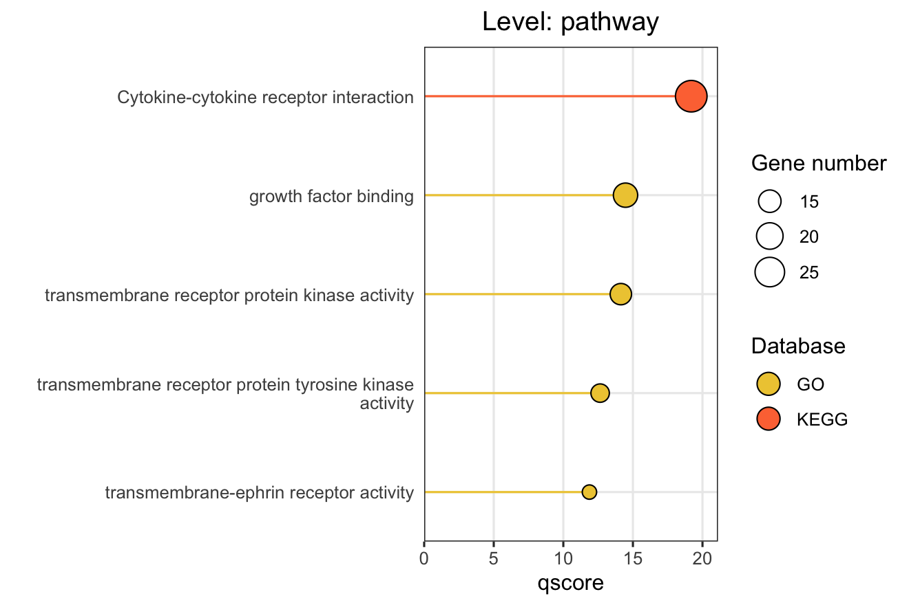
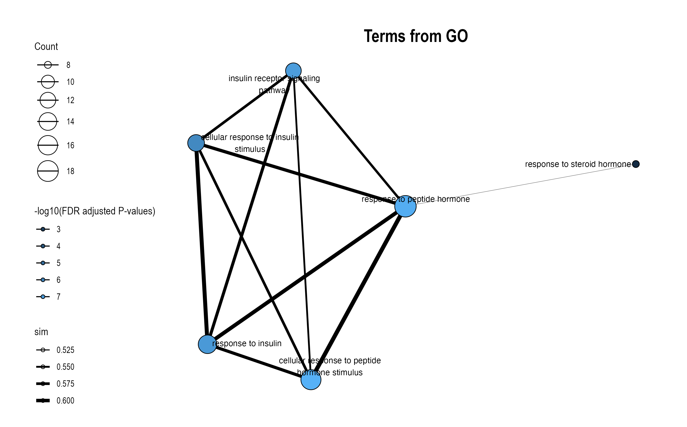
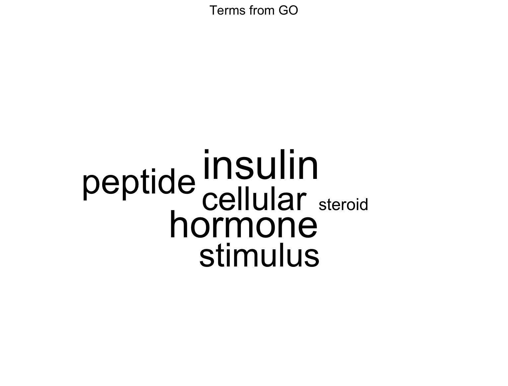
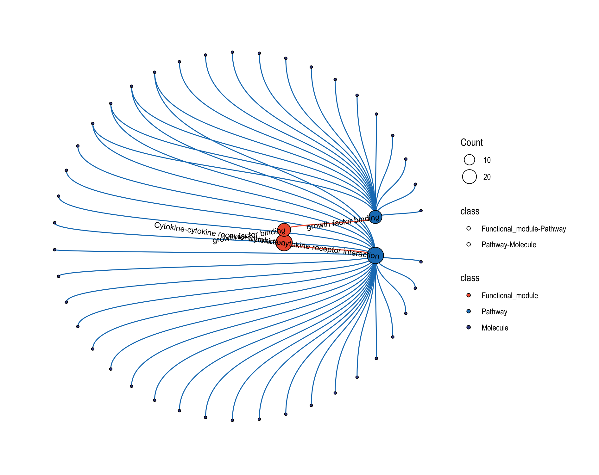

16 Data Visualization
This chaper details on how to utilize comprehensive visualization functions to explore and present your pathway enrichment and functional module results. Four main visualization approaches are covered: pathway bar charts, module information plots, similarity networks, and relationship networks.
Prerequisites: Before creating visualizations, make sure you have completed the previous analysis steps. The visualization functions require objects from:
- Enrichment analysis: Chapter 12
- Module clustering: Chapter 13 and Chapter 14
- Optional: LLM interpretation: Chapter 15
16.1 Overview of Visualization Functions
mapa provides four main visualization functions:
| Function tab | Purpose | Best Used For |
|---|---|---|
| Barplot | Horizontal bar charts of top enriched items | Showing enrichment strength across pathways/modules |
| Module Information | Multi-panel module details (network + bar + wordcloud) | Detailed examination of specific modules |
| Module Similarity Network | Similarity-based networks | Understanding pathway relationships and clustering |
| Relationship Network | Multi-level hierarchical networks | Visualizing connections across biological levels |
16.2 Option 1: Pathway Bar Chart
This function creates horizontal bar charts showing the top enriched pathways, modules, or functional modules. This is ideal for presenting enrichment results in publications.
16.2.1 Key Settings
| Settings | Description | Options/Default |
|---|---|---|
| Level | Analysis level | Pathway, Module, FM |
| X axis name | X-axis metric | ORA: GSEA: |
| Line type | Bar style | Straight (default), Meteor |
| LLM text | Use LLM names for functional modules | Tick box |
| Top N | Number of items to show | Default: 10 |
| Database | Databases to include | GO, KEGG, Reactome |
X-axis Metrics Explained:
- qscore: -log₁₀(adjusted p-value), higher values indicate more significant enrichment
- RichFactor: Ratio of input genes in pathway vs. all genes in pathway
- FoldEnrichment: Enrichment fold change (GeneRatio divided by BgRatio), see Section 3.3
- NES: Normalized Enrichment Score (GSEA only), positive/negative indicates up/down-regulation
Besides, you can tweak the color designated for each database by setting HEXA code or PGBA code or just manually set them.
Color Choice: You can view all available HEX color code in the RColorBrewer package by running RColorBrewer::display.brewer.all(), which displays each palette so you can visually choose the one you prefer.
Once you’ve decided, you can access its HEX codes using RColorBrewer::brewer.pal(n = 99, name = "PaletteName").
16.2.2 Basic Usage
After setting all the parameters listed above, hit the Submit, and the plot will be shown on the right.

16.3 Option 2: Module Information Plot
This function provides detailed, multi-panel visualizations of individual modules, including network topology, pathway rankings, and word clouds.
The content of each plot depends on the analysis level:
| Plot level | Module Level (Database-specific) |
FM Level (Cross-database) |
|---|---|---|
| Network | Shows pathways within the database-specific module and their similarity connections | Shows representative pathways from database-specific modules (SimCluster) or individual pathways (EmbedCluster) |
| Bar plot | Ranks individual pathways within the module by significance | Ranks the representative pathways or database-specific modules by significance |
| Word cloud | Word frequency from pathway descriptions, with word size reflecting statistical significance | Word frequency from all pathway descriptions in the functional module, with word size proportional to the sum of statistical significance values |
Word Cloud Interpretation: Word size reflects the cumulative statistical significance of pathways containing that word:
- For ORA (Over-Representation Analysis): Word size is proportional to the sum of -log10(adjusted p-value) across pathways containing that word. Larger words indicate terms appearing in pathways with stronger statistical enrichment.
- For GSEA (Gene Set Enrichment Analysis): Word size is proportional to the sum of |NES| (absolute Normalized Enrichment Score) across pathways containing that word. Larger words indicate terms appearing in pathways with stronger enrichment signals, regardless of direction (up- or down-regulation).
16.3.1 For FM (Functional Module) Level
Choose FM to plot functional module-level module information plot. Plots will pop up on the right panel. Representative figure is shown below (use GO and KEGG database).


16.3.2 For Module Level
Choose Module to plot database-specific module-level module information plot. Plots will pop up on the right panel. Representative figure is shown below (use GO database).



16.4 Option 3: Similarity Network
This function visualizes how pathways or modules cluster together based on similarity metrics.
16.4.1 Key Settings
| Parameter | Description | Usage |
|---|---|---|
Degree cutoff |
Minimum pathways per module | Filter small modules |
Text |
Show representative names | One label per module |
Text all |
Show all pathway names | All nodes labeled |
LLM text |
Use LLM-generated names | For functional modules with LLM interpretation |
16.4.2 Basic Usage
Configure your customized plot settings and plots will pop up on the right panel. Representative figure is shown below.

16.5 Option 4: Relationship Network
This function creates comprehensive multi-level networks showing relationships between functional modules, modules, pathways, and molecules.
16.5.1 Key Settings
| Parameter | Description | Default |
|---|---|---|
circular_plot |
Circular vs. horizontal layout | Not ticked |
Module ID |
Specific modules to show | NULL |
Levels Included |
The extent of details to show on the plot | All ticked |
Position Limits |
Determine how dense the node is arranged | [0, 1] for all |
16.5.2 Circular Layout
Tick Circular Plot to use a circular-style arrangement for relationship network. Plots will pop up on the right panel. Representative figure is shown below.

16.6 View Visualization Code
Click the “Code” button to see the exact R code that replicates your analysis:
- Code 1: Shows
function()function usage - Code 2: Shows
function()function usage
This code can be copied and used in your own R scripts for reproducible analysis.
16.7 Troubleshooting Visualization Issues
Common Issues and Solutions:
- Plots are not shown (white canva shown on the right)
- Verify that modules exist at the specified level
- Text labels overlapping or unreadable
- Adjust
Y label widthparameter - Untick
Text allto show only representative labels - Increase plot dimensions when saving
- Adjust
- LLM text not appearing
- Ensure Chapter 15: LLM Interpretation was run successfully
- Check that the object contains LLM interpretation results
16.8 Next Steps
Continue to Results Report to learn how to generate comprehensive analysis reports that combine all your results into professional documents.